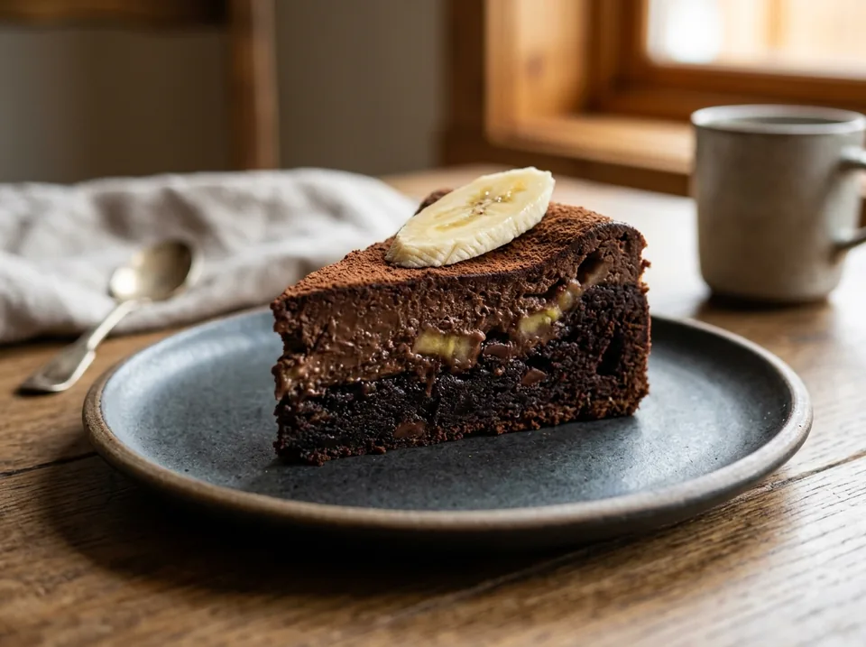

Десерты · 28 минут
Шоколадно-банановый брауни
Влажный, тающий десерт с глубоким шоколадным вкусом какао «Золотой Ярлык», сладостью спелых бананов и нежной творожной основой. Овсяная мука с двойной порцией протеина надежно удерживают влагу без грамма пшеничной муки.
К ингредиентам
Ингредиенты · 4 порций
- Творог 5% («Моя цена») — 360 г (2 пачки)
- Бананы спелые (очищенные) — 235 г (2 шт.)
- Яйца куриные С0 — 2 шт (~120 г)
- Сывороточный протеин (базовый + шоколадный) — 45 г (1 скуп + 1 ст. л.)
- Какао-порошок («Золотой Ярлык») — 15 г
- Овсяная мука — 25–30 г (1.5–2 ст. л.)
- Заменитель сахара (ФитПарад) — 7 стиков
- Разрыхлитель теста — 1/2 ч. л. (~3 г)
- Соль мелкая — щепотка
Пищевая ценность
На 100 г: 159 ккал · Б 16.7 г · Ж 5.1 г · У 11.6 г
Шаг за шагом
Бананово-яичная основа
В чашу блендера поместите 2 очищенных банана (235 г) и разбейте 2 яйца С0. Измельчите погружным блендером 20–30 секунд до однородного жидкого фруктового пюре.
Добавление творога и сухих компонентов
Добавьте 360 г творога 5%, 45 г протеина (базовый КСБ + ложка шоколадного), 15 г какао «Золотой Ярлык», 25–30 г овсяной муки, 7 стиков ФитПарада, 1/2 ч. л. разрыхлителя и обязательную щепотку соли.
Взбивание до шелковистости
Тщательно пробейте массу погружным блендером 1.5–2 минуты. Все творожные крупинки должны раствориться. Тесто станет густым, глянцевым и насыщенно-шоколадным.
Выпекание в аэрогриле (160–165°C, 26–28 мин)
Перелейте массу в силиконовую форму (d=16–18 см) или форму с пергаментом. Выпекайте при температуре 160–165°C ровно 26–28 минут. Верх схватится ровной корочкой, а серединка останется нежной и слегка подвижной.
Охлаждение и стабилизация
Дайте десерту полностью остыть при комнатной температуре, затем уберите в холодильник на 2–3 часа (идеально на ночь). Овсяная клетчатка свяжет остаточную влагу, и пирог приобретет эталонную плотную текстуру настоящего шоколадного брауни.